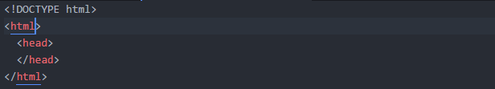
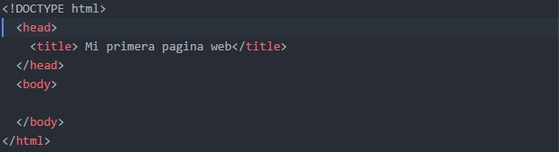
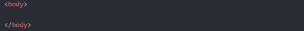
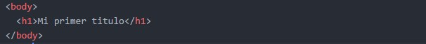
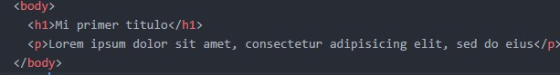
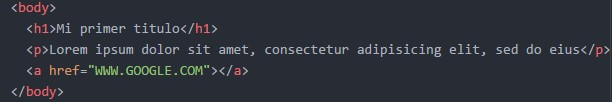

Paso 1:
Abre un editor de texto o editor de codigo de preferencia. En tu equipo Windows, generalmente podrias usar Bloc de notas, mientras que usas algun editor de tu preferencia.
Paso 2:
Escribe !DOCTYPE html y presiona ENTER, luego digita html y presiona ENTER de nuevo. Para finalizar, escribe head y presiona ENTER. La parte superior del documento debe verse de la siguiente manera:

Paso 3:
Escribe title, ingresa el título de pestaña que le daras a tu página web y escribe /title. La sección de título se debe ver de la siguiente manera:
Paso 4:
Escribe body debajo de la etiqueta de cierre head. Esta acción asegura que el resto del texto del documento se considere texto de la página web hasta que cierres la etiqueta body.
Paso 5:
El encabezado de página es el título que aparecerá en la parte superior de la página web. Para crear uno, escribe h1, añade el encabezado y luego cierra la etiqueta con /h1. Como la siguiente figura:
Paso 6:
Las etiquetas de párrafo se usan para crear bloques distintos de texto. Para colocar texto en un párrafo, escribe p y escribe el texto, luego escribe p para cerrar la etiqueta:
Paso 7:
Puedes añadir un enlace a otra página web usando las etiquetas a href="link" link text, en donde link es la dirección de la página web a la que quieres hacer un enlace.
Nota:
Recuerda buscar en mas fuentes y practica en la creacion de tus paginas para diseñar mas paginas increibles.